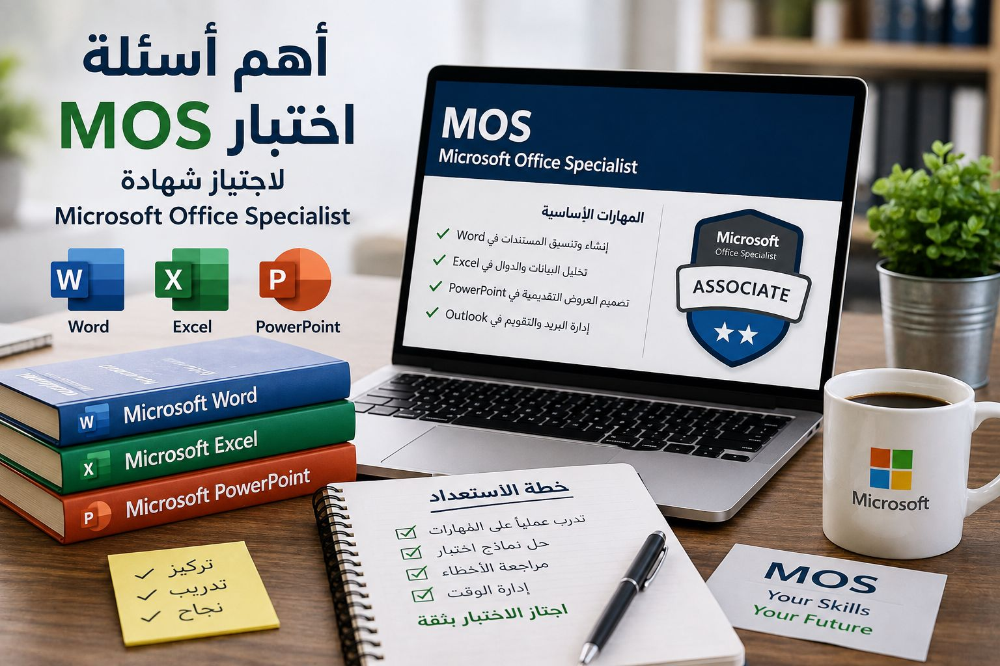

أهم أسئلة اختبار MOS مع الإجابات لاجتياز شهادة Microsoft Office Specialist 2026

إذا كنت تستعد للحصول على شهادة Microsoft Office Specialist – MOS فمن الطبيعي أن تبحث عن أسئلة اختبار MOS مع الإجابات لمعرفة طبيعة المهارات المطلوبة ومستوى الاختبارات قبل الدخول إليها.
لكن هناك نقطة يجب معرفتها أولًا:
MOS ليست مجرد اختبار نظري يعتمد على حفظ الأسئلة.
اختبارات Microsoft Office Specialist تعتمد بدرجة كبيرة على تنفيذ مهام فعلية داخل تطبيقات Microsoft Office مثل Word وExcel وPowerPoint، ولذلك فإن معرفة مكان الأمر داخل البرنامج وكيفية تنفيذ المهمة بسرعة أهم من حفظ الإجابة فقط.
وفي هذا الدليل ستجد مجموعة من أهم أسئلة MOS التدريبية في Word وExcel وPowerPoint، بالإضافة إلى شرح مسار الشهادة وكيفية الاستعداد للاختبار بطريقة عملية.
الإجابة السريعة: أفضل طريقة للاستعداد لاختبارات MOS هي التدريب الفعلي على Word وExcel وPowerPoint، وتنفيذ المهام بنفسك داخل البرامج، ثم استخدام الأسئلة التدريبية لاكتشاف نقاط الضعف. اختبارات MOS الحالية تستغرق عادة 50 دقيقة وتعتمد على تنفيذ مهام داخل التطبيق نفسه.
إذا كنت تريد بناء هذه المهارات بصورة منظمة، يمكنك الاطلاع على دورة MOS من معهد مسارتك والتي تركز على التدريب العملي على تطبيقات Microsoft Office والاستعداد لطبيعة اختبارات Microsoft Office Specialist.
MOS اختصار لـ:
Microsoft Office Specialist
وهي شهادات من Microsoft تهدف إلى إثبات قدرة المستخدم على استخدام تطبيقات Microsoft Office بكفاءة عملية.
ومن أهم التطبيقات المرتبطة بمسار MOS:
Microsoft Word
Microsoft Excel
Microsoft PowerPoint
Microsoft Outlook
وفي مسار Microsoft Office Specialist: Associate – Microsoft 365 Apps توجد حاليًا اختبارات مثل:
| التطبيق | كود الاختبار |
|---|---|
| Microsoft Word | MO-110 |
| Microsoft Excel | MO-210 |
| Microsoft PowerPoint | MO-310 |
| Microsoft Outlook | MO-410 – معلن عنه كاختبار قادم حاليًا |
وللحصول على شهادة MOS Associate، توضح Microsoft أنه يجب اجتياز ثلاثة اختبارات من برامج مختلفة، على أن يكون واحد منها على الأقل من اختبارات Microsoft 365 Apps.
هذه من أكثر النقاط التي تسبب التباسًا للمتدربين.
عندما يبحث شخص عن:
اختبار MOS
فهو غالبًا يقصد اختبارات برنامج Microsoft Office Specialist بصورة عامة.
لكن عمليًا هناك اختبارات منفصلة لكل تطبيق.
مثل:
MO-110 لاختبار Word.
MO-210 لاختبار Excel.
MO-310 لاختبار PowerPoint.
ولذلك يجب أن تعرف أي تطبيق وأي مستوى شهادة تستهدفه قبل أن تبدأ المذاكرة.
توضح Microsoft أن اختبارات Microsoft Office Specialist – MOS تمنح المتقدم حاليًا 50 دقيقة لإكمال الاختبار، بينما إجمالي الوقت المخصص للجلسة يكون نحو 60 دقيقة.
وهذا يجعل سرعة تنفيذ المهام عاملًا مهمًا.
معرفة الخطوات وحدها لا تكفي.
يجب أن تستطيع تنفيذها بدون إضاعة وقت في البحث داخل القوائم.
اختبارات MOS مختلفة عن كثير من اختبارات الشهادات التقنية.
Microsoft تصف اختبار MOS بأنه:
Live-in-the-Application
أي أنك تتعامل مع تطبيق Office وتنفذ المهام المطلوبة داخل البرنامج نفسه، بصورة قريبة من بيئة العمل الحقيقية.
لذلك السؤال الأهم أثناء استعدادك ليس:
هل أعرف الإجابة؟
بل:
هل أستطيع تنفيذ المهمة داخل البرنامج؟
يعتبر Word أحد أهم التطبيقات في مسار MOS.
اختبار MO-110 Microsoft Word – Microsoft 365 Apps يقيس مهارات تشمل إدارة المستندات، وتنسيق النصوص والفقرات والأقسام، وإدارة الجداول والقوائم، والمراجع، والعناصر الرسومية، والتعاون على المستندات.
1. كيف تغير اتجاه الصفحة من Portrait إلى Landscape؟
من:
Layout Orientation Landscape
هذه مهمة بسيطة، لكن يجب أن تعرف أيضًا كيفية تطبيق إعداد مختلف على جزء محدد من المستند باستخدام Sections.
2. ما الفرق بين Page Break وSection Break؟
Page Break
ينقل المحتوى التالي إلى صفحة جديدة.
Section Break
يقسم المستند إلى Sections يمكن أن يكون لكل منها إعدادات مختلفة.
مثل:
Orientation.
Headers.
Footers.
Columns.
Page numbering.
3. لماذا نستخدم Styles في Word؟
Styles تسمح بتطبيق تنسيق موحد على العناوين والنصوص.
مثل:
Heading 1
Heading 2
Normal
وهي مهمة كذلك عند إنشاء Table of Contents تلقائي.
4. كيف تنشئ جدول محتويات تلقائيًا؟
الخطوة الأولى هي استخدام Heading Styles بشكل صحيح.
بعد ذلك:
References Table of Contents
ثم اختيار النمط المناسب.
إذا كتبت العناوين يدويًا دون Styles فلن يحصل Word على الهيكل الصحيح للمستند بنفس الطريقة.
5. ما الفرق بين Header وFooter؟
Header يظهر أعلى الصفحة.
Footer يظهر أسفل الصفحة.
ويمكن استخدامهما لإضافة:
اسم التقرير.
اسم المؤسسة.
التاريخ.
رقم الصفحة.
6. كيف تضيف أرقام الصفحات؟
من:
Insert Page Number
ثم تحدد:
أعلى الصفحة.
أسفل الصفحة.
مكان الرقم.
Format.
7. ما وظيفة Find and Replace؟
تستخدم للبحث عن كلمة أو تنسيق وتغييره بسرعة داخل المستند.
مثل استبدال:
2025
بـ:
2026
في جميع أجزاء الملف.
8. متى تستخدم Track Changes؟
عندما يعمل أكثر من شخص على مراجعة المستند.
تسمح Track Changes بإظهار:
النص المضاف.
النص المحذوف.
تعديلات المحتوى.
ثم يمكن قبول التعديلات أو رفضها.
9. ما الفرق بين Comments وTrack Changes؟
Comments تستخدم لإضافة ملاحظات واقتراحات.
أما:
Track Changes
فتستخدم لتسجيل التعديلات التي أجريت بالفعل على المستند.
10. كيف تمنع سطرًا واحدًا من Heading من البقاء أسفل الصفحة بينما ينتقل النص للصفحة التالية؟
هذه من المهارات التي تحتاج فهم Paragraph Settings وإدارة Page Breaks وتنسيق الفقرات بدل الضغط على Enter عدة مرات.
والقاعدة المهمة:
لا تستخدم Enter لبناء Layout المستند.
استخدم أدوات التنسيق الصحيحة.
تأكد أنك تستطيع تنفيذ المهام التالية بدون مساعدة:
تغيير الهوامش.
تغيير Orientation.
إنشاء Sections.
استخدام Styles.
إنشاء Headers وFooters.
ترقيم الصفحات.
إنشاء Tables.
استخدام Bullets وNumbering.
إدراج Pictures وShapes.
إنشاء References.
استخدام Comments.
إدارة Track Changes.
بالنسبة لكثير من المتدربين يكون Excel الجزء الأكثر أهمية؛ لأنه مطلوب بصورة واسعة في الوظائف الإدارية والمالية والتحليلية.
اختبار Excel Associate الحالي يقيس مهارات إدارة Worksheets وWorkbooks والخلايا والنطاقات والجداول، واستخدام Formulas وFunctions، وإنشاء Charts.
11. ما الفرق بين Workbook وWorksheet؟
Workbook هو ملف Excel كامل.
مثل:
Sales.xlsx
أما:
Worksheet
فهي صفحة داخل Workbook.
وقد يحتوي Workbook واحد على عدة Worksheets.
12. كيف تثبت الصف العلوي أثناء التمرير؟
استخدم:
View Freeze Panes Freeze Top Row
وهذه ميزة مفيدة جدًا عند التعامل مع جداول طويلة.
13. ما الفرق بين Relative Reference وAbsolute Reference؟
Relative
مثل:
A1
يتغير عند نسخ المعادلة.
Absolute
مثل:
$A$1
يبقى ثابتًا عند نسخ المعادلة.
14. ماذا تفعل دالة SUM؟
تجمع مجموعة من الأرقام.
مثال:
=SUM(B2:B20)
تجمع القيم من B2 إلى B20.
15. ماذا تفعل AVERAGE؟
تحسب المتوسط الحسابي.
=AVERAGE(B2:B20)
16. ما وظيفة MAX وMIN؟
MAX
تعيد أكبر قيمة.
MIN
تعيد أصغر قيمة.
مثال:
=MAX(C2:C100)
17. كيف تحسب عدد الخلايا التي تحتوي أرقامًا؟
يمكن استخدام:
=COUNT(A1:A100)
أما إذا كنت تريد حساب الخلايا غير الفارغة بصورة عامة، فقد تستخدم:
=COUNTA(A1:A100)
18. ما وظيفة IF؟
تستخدم لتنفيذ منطق شرطي.
مثال:
=IF(B2>=60,"Pass","Fail")
إذا كانت القيمة 60 أو أكثر تظهر:
Pass
وإلا تظهر:
Fail
19. ما الفرق بين Sort وFilter؟
Sort
يغير ترتيب البيانات.
مثل:
الأعلى إلى الأقل.
Filter
يخفي البيانات التي لا تطابق شرطًا معينًا دون حذفها.
20. لماذا نحول البيانات إلى Excel Table؟
Excel Tables توفر عدة مزايا مثل:
تنسيق منظم.
Filters.
Structured References.
التوسع التلقائي.
سهولة استخدام البيانات في التحليل.
21. ما وظيفة Conditional Formatting؟
تستخدم لتغيير شكل الخلايا بناءً على قيمة البيانات.
مثال:
إظهار المبيعات الأعلى من 10,000 بشكل مميز.
أو استخدام:
Data Bars.
Color Scales.
Icons.
الهدف ليس الزينة، بل إظهار الأنماط والمعلومات المهمة بسرعة.
22. كيف تزيل البيانات المكررة؟
من:
Data Remove Duplicates
ثم اختيار الأعمدة التي تريد الاعتماد عليها لتحديد Duplicate Records.
23. ما وظيفة Flash Fill؟
تتعرف على Pattern وتساعد على إكمال البيانات تلقائيًا.
مثال:
إذا كان لديك:
Ahmed Mohamed
وأدخلت في العمود المجاور:
Ahmed
فقد يتعرف Flash Fill على أنك تريد استخراج الاسم الأول.
24. ماذا يعني ####### داخل Excel؟
في حالات كثيرة لا يكون هذا خطأ في المعادلة.
قد يعني ببساطة أن عرض العمود غير كافٍ لعرض القيمة.
الحل المحتمل:
توسيع Column Width.
25. لديك جدول مبيعات وتريد إظهار المنتجات التي حققت مبيعات أعلى من 5,000 ريال فقط. ماذا تستخدم؟
يمكن استخدام:
Filter
ثم تحديد شرط:
Greater Than 5000
ولا تحتاج إلى حذف أي Rows.
26. لديك نسبة ضريبة موجودة في الخلية F1 وتريد استخدامها مع جميع الصفوف. كيف تشير إليها؟
استخدم Absolute Reference:
$F$1
حتى لا يتغير المرجع عند نسخ المعادلة.
27. كيف تنشئ Chart من البيانات؟
حدد البيانات المطلوبة ثم:
Insert Charts
واختر Chart مناسبًا.
لكن لا تختار الرسم لأنه يبدو أجمل فقط.
اختره بناء على الهدف.
مثال:
Column للمقارنة.
Line للاتجاه الزمني.
Bar للمقارنة بين الفئات.
MOS يعطيك أساسًا مهمًا في استخدام Excel، لكن إذا كان هدفك هو التحليل المتقدم والتعامل مع البيانات والتقارير، يمكنك بعده الانتقال إلى دورة تحليل البيانات باستخدام Microsoft Excel.
ومن بعدها يصبح الانتقال إلى دورة Power BI أكثر منطقية إذا كنت تريد التخصص في تحليل البيانات وBusiness Intelligence.
اختبار MO-310 Microsoft PowerPoint – Microsoft 365 Apps يركز على إدارة العروض والشرائح والنصوص والصور والأشكال والجداول والرسوم وSmartArt والوسائط والانتقالات والحركات.
28. ما الفرق بين Theme وTemplate؟
Theme
يحدد عناصر التصميم مثل:
Colors.
Fonts.
Effects.
Template
يمكن أن يحتوي على تصميم جاهز بالإضافة إلى Layouts ومحتوى أو إعدادات أخرى.
29. ما وظيفة Slide Master؟
Slide Master يسمح بالتحكم في التنسيق العام للعروض.
مثل:
Fonts.
Colors.
Logo.
Background.
Placement.
بدل تعديل عشرات الشرائح واحدة تلو الأخرى.
30. ما الفرق بين Transition وAnimation؟
Transition
تأثير يحدث عند الانتقال بين Slide وأخرى.
Animation
تأثير يتم تطبيقه على عنصر داخل Slide.
مثل:
Text.
Image.
Shape.
31. كيف تضيف Notes للمقدم؟
يمكن استخدام Speaker Notes لإضافة معلومات يراها مقدم العرض للمساعدة أثناء Presentation دون وضعها كلها أمام الجمهور.
32. ما هي SmartArt؟
SmartArt أداة لإنشاء رسومات منظمة لعرض:
Processes.
Hierarchies.
Relationships.
Lists.
33. متى تستخدم Chart بدل Table؟
استخدم Chart عندما يكون الهدف:
رؤية الاتجاه أو المقارنة بسرعة.
واستخدم Table عندما يحتاج المستخدم إلى قراءة:
الأرقام الدقيقة والتفاصيل.
34. لماذا لا يفضل وضع نصوص كثيرة داخل Slide؟
لأن العرض التقديمي ليس Document.
وظيفة Slide هي دعم المتحدث وعرض الأفكار بصريًا.
الشرائح المزدحمة:
أصعب في القراءة.
تضعف التركيز.
تقلل وضوح الرسالة.
35. كيف تكرر تصميمًا موحدًا في جميع الشرائح؟
بدل تعديل كل Slide منفردة، استخدم:
Slide Master
وهذا أسرع وأكثر دقة.
تشمل دورة MOS في مسارتك Word وExcel وPowerPoint، مع Outlook ضمن المحتوى وفق المسار والدفعة الحالية.
36. ما الفرق بين CC وBCC؟
CC
يمكن للمستلمين رؤية الأشخاص الآخرين الموجودين في CC.
BCC
يتم إرسال نسخة للمستلم دون أن تظهر بقية عناوين BCC للمستلمين الآخرين.
37. ما الفرق بين Appointment وMeeting؟
Appointment
موعد داخل Calendar خاص بالمستخدم.
أما:
Meeting
فيتضمن عادة دعوة أشخاص آخرين.
38. لماذا تستخدم Rules في Outlook؟
Rules تساعد على أتمتة تنظيم البريد.
مثل:
نقل رسائل من مرسل معين.
نقل رسائل إلى Folder.
تنظيم البريد تلقائيًا.
39. ما فائدة Categories؟
تستخدم لتصنيف:
Messages.
Appointments.
Tasks.
بشكل يساعد على تنظيم العمل.
40. ما الفرق بين Reply وReply All؟
Reply
يرسل الرد إلى المرسل.
Reply All
يرسل الرد إلى المرسل وبقية الأشخاص المدرجين في الرسالة بحسب الحقول المستخدمة.
في بيئات العمل يجب استخدام Reply All فقط عندما يحتاج الجميع فعلًا إلى الرد.
قبل حجز الاختبار، افتح Word وExcel وPowerPoint وحاول تنفيذ المهام التالية بدون البحث على الإنترنت.
Word
أنشئ تقريرًا من عدة صفحات.
استخدم Heading Styles.
أضف Header وFooter.
أنشئ Table of Contents.
أضف Table.
أدرج صورة وقم بتنسيقها.
فعّل Track Changes.
Excel
أنشئ Table.
استخدم SUM وAVERAGE وIF.
طبّق Conditional Formatting.
استخدم Filter وSort.
أنشئ Chart.
استخدم Absolute Reference.
PowerPoint
أنشئ Presentation.
غير Theme.
استخدم Slide Master.
أضف SmartArt.
أدرج Chart.
أضف Transitions.
أضف Animations.
إذا استغرقت وقتًا طويلًا في البحث عن مكان كل أمر، فأنت تحتاج إلى المزيد من التدريب قبل الاختبار.
الصعوبة ليست دائمًا في معرفة الوظيفة.
المشكلة غالبًا تكون في:
الوقت + معرفة مكان الأداة + فهم صياغة المهمة + تنفيذها بالشكل المطلوب.
لذلك لا تدرس بطريقة:
شاهد فيديو احفظ الخطوات انتهى.
الأفضل:
شاهد نفّذ أغلق الشرح أعد تنفيذ المهمة وحدك.
1. حدد الاختبار الذي ستدخله
لا تقل فقط:
سأدرس MOS.
حدد:
Word؟
Excel؟
PowerPoint؟
وما كود الاختبار المرتبط بالإصدار الذي ستختبر عليه؟
2. تدرب داخل البرنامج نفسه
اختبارات MOS عملية، لذلك اجعل معظم وقت المذاكرة داخل تطبيق Office.
Microsoft توضح أن MOS يستخدم تجربة Live-in-the-Application حيث يُطلب منك تنفيذ مهام داخل التطبيق نفسه.
3. تدرب بوقت محدد
بما أن اختبار MOS الحالي يمنحك 50 دقيقة، ابدأ بعد الوصول إلى مستوى جيد في تنفيذ Mock Tasks بوقت محدد.
الهدف أن تعرف تنفيذ المهام دون بحث طويل في Ribbon.
4. تعلم أكثر من طريقة لكن استخدم الأسرع
بعض المهام يمكن تنفيذها:
من Ribbon.
باستخدام Right Click.
باستخدام Keyboard Shortcut.
المهم أن تستخدم الطريقة التي تعرفها جيدًا وتقلل الأخطاء.
5. لا تحفظ مكان الأداة فقط
افهم:
متى تستخدمها.
مثلًا لا يكفي معرفة مكان Section Break.
يجب أن تعرف لماذا تحتاج Section Break بدل Page Break.
لا يوجد رقم مناسب للجميع.
Microsoft تصف المرشح في اختبارات MOS Associate للتطبيقات مثل Excel وPowerPoint بأنه يمتلك تقريبًا 150 ساعة من التدريب والخبرة العملية في التطبيق عند مستوى Associate، لكن هذا وصف لمستوى المرشح وليس شرطًا بأن يسجل كل شخص 150 ساعة حرفيًا قبل الاختبار.
الشخص الذي يستخدم Office يوميًا قد يحتاج وقتًا أقل للتحضير، بينما المبتدئ يحتاج إلى تأسيس وتطبيق أكثر.
تظهر صفحات بعض شهادات MOS الحالية مثل Excel Associate وPowerPoint Associate دعم العربية – السعودية ضمن لغات الاختبار المتاحة.
لكن يجب التحقق من اللغة المتاحة للاختبار المحدد وقت الحجز، لأن اللغات قد تختلف حسب الاختبار والإصدار.
نعم، خصوصًا لمن يريد بناء مهارات Microsoft Office المطلوبة في العمل.
وتناسب:
الطلاب.
الخريجين.
الموظفين.
الإداريين.
السكرتارية.
موظفي الموارد البشرية.
المحاسبة.
المبيعات.
أصحاب الأعمال.
كما يمكن أن تكون بداية لمسارات أكثر تخصصًا.
لا يوجد جواب واحد يناسب الجميع.
إذا كان هدفك هو إثبات مهاراتك في تطبيقات Microsoft Office نفسها، فإن Microsoft Office Specialist مسار متخصص في منتجات Microsoft.
لكن اختيار الشهادة يجب أن يعتمد على:
جهة العمل.
الوظيفة المستهدفة.
المهارات المطلوبة.
الشهادة التي يطلبها صاحب العمل.
لا تحصل على شهادة فقط لأن اسمها مشهور.
ابدأ بالوظيفة أو المهارة التي تريدها ثم اختر الاعتماد المناسب لها.
هنا يجب أن يكون القرار مبنيًا على مسارك المهني.
إذا أحببت Excel والبيانات
انتقل إلى دورة تحليل البيانات باستخدام Excel.
ثم يمكنك تطوير المسار باستخدام دورة Power BI لإنشاء التقارير ولوحات المعلومات وتحليل البيانات.
إذا أردت الدخول في البرمجة وتحليل البيانات
يمكنك التوسع بعد بناء الأساس إلى دورة Python.
إذا كان هدفك إداريًا وإدارة المشاريع
يمكنك الانتقال لاحقًا إلى دورة PMP.
الفكرة ليست:
MOS أي دورة متاحة.
بل:
MOS المهارة التي تخدم الوظيفة المستهدفة.
إذا كنت تريد الاستعداد بصورة عملية بدل الاعتماد فقط على أسئلة اختبار MOS، تقدم دورة MOS من معهد مسارتك تدريبًا على أهم تطبيقات Microsoft Office.
وتغطي الدورة الحالية:
Microsoft Word.
Microsoft Excel.
Microsoft PowerPoint.
Outlook وفق المسار والدفعة.
المستندات والتقارير.
الجداول والدوال.
الرسوم البيانية.
العروض التقديمية.
التطبيقات المكتبية العملية.
الاستعداد لطبيعة اختبارات MOS.
وفق البيانات الحالية على صفحة مسارتك، مدة الدورة 4 أسابيع، والتدريب متاح حضوريًا في الرياض أو أونلاين وفق الدفعة المتاحة. والسعر الظاهر حاليًا على الصفحة هو 1,150 ريال سعودي، مع ضرورة الاعتماد على بيانات الحجز النهائية وقت التسجيل لأنها قد تتغير.
ومن المهم أيضًا التفريق بين:
دورة مسارتك التدريبية
و:
شهادة Microsoft Office Specialist الدولية.
صفحة الدورة توضح أن التدريب يؤهلك للمسار، بينما الحصول على شهادة MOS الدولية نفسها يتطلب اجتياز الاختبار الرسمي، ورسوم الاختبار منفصلة عن التدريب إلا إذا نص عرض الحجز على غير ذلك.
تعرف على دورة MOS ومواعيد التسجيل
ما هو اختبار MOS؟
MOS هو اختصار لـMicrosoft Office Specialist، وهو برنامج شهادات يقيس المهارات العملية في تطبيقات Microsoft Office مثل Word وExcel وPowerPoint.
هل MOS اختبار واحد؟
لا. توجد اختبارات مختلفة بحسب التطبيق والإصدار. ومن الاختبارات الحالية لمسار Microsoft 365 Apps: MO-110 لـWord، وMO-210 لـExcel، وMO-310 لـPowerPoint.
كم مدة اختبار MOS؟
مدة الاختبار الحالية لاختبارات MOS هي 50 دقيقة.
هل اختبار MOS عملي؟
نعم. Microsoft تصفه بأنه Live-in-the-Application، حيث ينفذ المتقدم مهام فعلية داخل تطبيق Office المستخدم في الاختبار.
هل يمكن اجتياز MOS من أول مرة؟
نعم، إذا كنت قادرًا على تنفيذ المهارات المطلوبة بسرعة ودقة. الاعتماد على حفظ أسئلة التدريب وحده ليس طريقة كافية للاستعداد.
ما أهم برامج MOS؟
من أشهر البرامج المرتبطة بمسار Associate:
Word.
Excel.
PowerPoint.
Outlook.
لكن اختبارات وإصدارات الشهادة تختلف، لذلك تحقق من المسار الذي تريد الحصول عليه قبل التسجيل.
ما هو كود اختبار MOS Word؟
اختبار Word الحالي في Microsoft 365 Apps هو MO-110.
ما هو كود اختبار Excel MOS؟
اختبار Excel Associate في Microsoft 365 Apps هو MO-210.
ما هو اختبار PowerPoint MOS؟
اختبار PowerPoint Associate الخاص بـMicrosoft 365 Apps هو MO-310.
هل Excel أصعب جزء في MOS؟
يعتمد على خبرتك. الشخص الذي لا يستخدم Functions وTables وCharts قد يجد Excel أصعب، بينما مستخدم Excel اليومي قد يجد الجزء أسهل من Word أو PowerPoint.
هل شهادة MOS مفيدة للوظائف؟
يمكن أن تساعد في إثبات مهارات Microsoft Office، لكن الشهادة وحدها لا تضمن وظيفة. قيمتها تكون أكبر عندما تجمع بين الاعتماد والقدرة الحقيقية على تنفيذ مهام العمل.
هل أدرس Power BI بعد MOS؟
إذا وجدت نفسك مهتمًا بـExcel وتحليل البيانات، فـPower BI خطوة منطقية بعد بناء أساس جيد في البيانات والجداول. يمكنك الاطلاع على دورة Power BI من مسارتك.
إذا كنت تريد اجتياز اختبار MOS فلا تجعل هدفك حفظ أكبر عدد من الأسئلة.
افتح Word.
أنشئ مستندًا.
افتح Excel.
ابنِ جدولًا واكتب Functions وأنشئ Chart.
افتح PowerPoint.
أنشئ عرضًا من البداية.
ثم حاول تنفيذ المهام مرة أخرى بدون شرح.
لأن السؤال الحقيقي في MOS ليس:
هل تعرف أن الأداة موجودة؟
بل:
هل تستطيع استخدامها بصورة صحيحة وسريعة عندما يُطلب منك ذلك؟
استخدم أسئلة MOS التدريبية لقياس مستواك، واجعل التطبيق العملي أساس استعدادك.
وإذا كنت تريد التدريب بصورة منظمة على Word وExcel وPowerPoint والاستعداد لمسار Microsoft Office Specialist، يمكنك الاطلاع على دورة MOS في معهد مسارتك بالرياض وأونلاين.
دورات ذات صلة
دورة تحليل بيانات الموارد البشرية HR Data Analysis – احتراف قراءة مؤشرات الموارد البشرية
المدة: 5 Days
أقرب موعد: سيتم تحديده قريبًا
دورة إدارة المشاريع PMP من PMI بالرياض 35 ساعه تأهيل لشهادة PMP أونلاين وحضوري
المدة: 28 Days
أقرب موعد: الجمعة 04-12-2026
دورة أخصائي مايكروسوفت أوفيس MOS | تأهيل لشهادة Microsoft Office Specialist أونلاين وحضوري بالرياض
المدة: 28 Days
أقرب موعد: الجمعة 04-12-2026
دورة MCSE Data Management and Analytics بالرياض | احتراف تحليل البيانات وSQL Server
المدة: 5 Days
أقرب موعد: سيتم تحديده قريبًا
عرض تفاصيل البرنامج
دورة إدارة البرامج الناجحة MSP – احتراف إدارة البرامج والتحول المؤسسي مع معهد مسارتك
المدة: 5 Days
أقرب موعد: سيتم تحديده قريبًا
دورة PHRi في الرياض | التحضير لشهادة محترف الموارد البشرية الدولية
المدة: 14 Days
أقرب موعد: الجمعة 04-12-2026
دورة CIPD للموارد البشرية | تدريب احترافي في People Practice وPeople Management أونلاين وحضوري بالري
المدة: 5 Days
أقرب موعد: سيتم تحديده قريبًا
دورة Microsoft Project بالرياض | تخطيط وإدارة المشاريع باحتراف – سجّل الآن
المدة: 5 Days
أقرب موعد: سيتم تحديده قريبًا